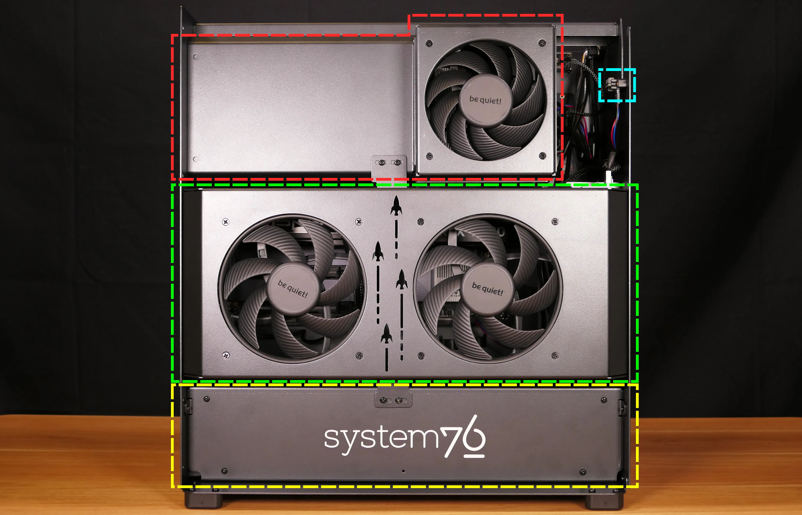
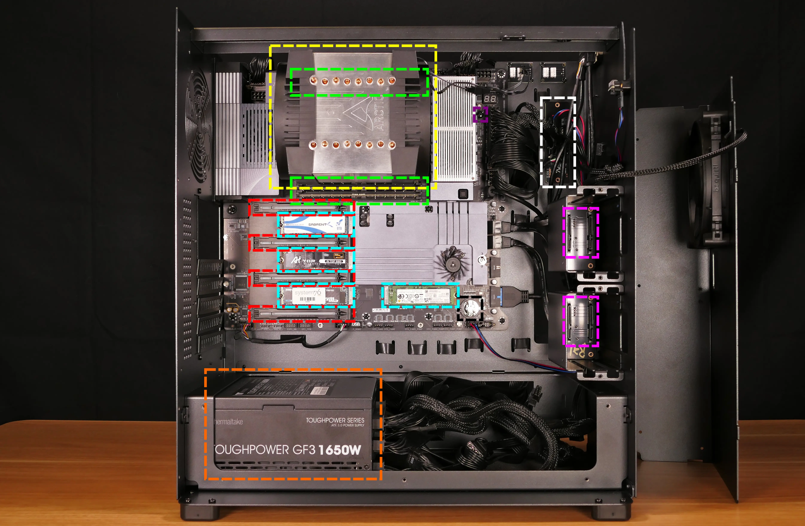
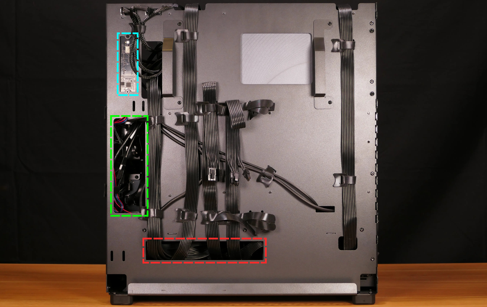
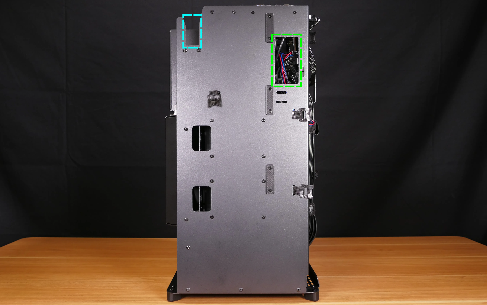
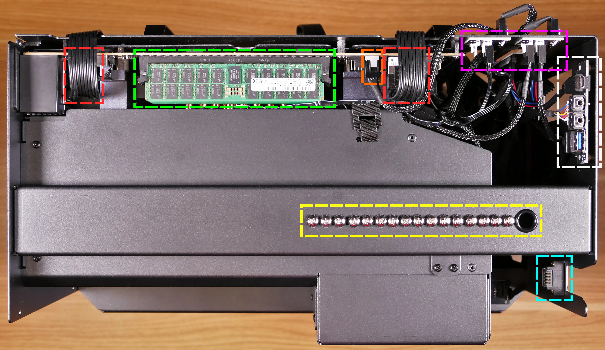

Thelio Mega (Internal Overview)
Left side overview:
Chassis components:

- CPU duct is highlighted in red
- Power button receptacle cutout is highlighted in cyan
- Side fan mount is highlighted in green
- PSU bracket is highlighted in yellow
Electronic components:

- CPU heatsink is highlighted in yellow
- RAM slots are highlighted in green
- RAM slots are partially obstructed by the CPU heatsink
- PCIe 5.0 x16 slots are highlighted in red
- Primary GPU slot is the top slot
- M.2 slots are highlighted in cyan
- 2.5" SATA slots are highlighted in pink
- Thelio Io daughterboard is highlighted in white
- Motherboard power button is highlighted in purple
- CMOS battery is highlighted in black
- Power supply is highlighted in orange
Right side overview:

- Back of Thelio Io board is highlighted in cyan
- Internal power button is on the Thelio Io board
- SATA backplane access cutout is highlighted in green
- Power supply access cutout is highlighted in red
Front side overview:

- Power button receptacle cutout is highlighted in cyan
- Thelio Io connector access cutout is highlighted in green
Top overview:

- CPU power connectors are highlighted in red
- Connect to power supply
- Top RAM slot is highlighted in green
- CPU fan input header is highlighted in orange
- Connects to Thelio Io board
- CPU fan output splitters are highlighted in pink
- Connect to the CPU fans and the Thelio Io board
- Top I/O board is highlighted in white
- Connects to motherboard
- 2.5" drive screws are highlighted in yellow
- Power button receptacle is highlighted in cyan
- Connects to Thelio Io board
See the repairs page for detailed information about installing or replacing components.